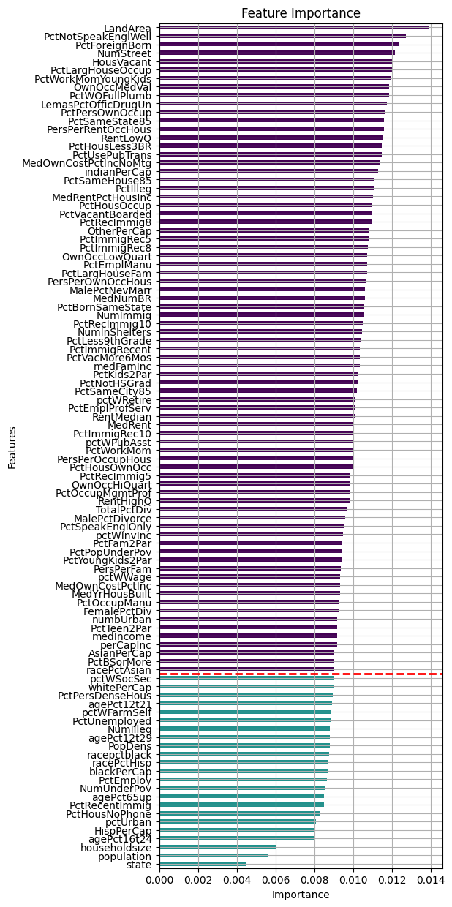
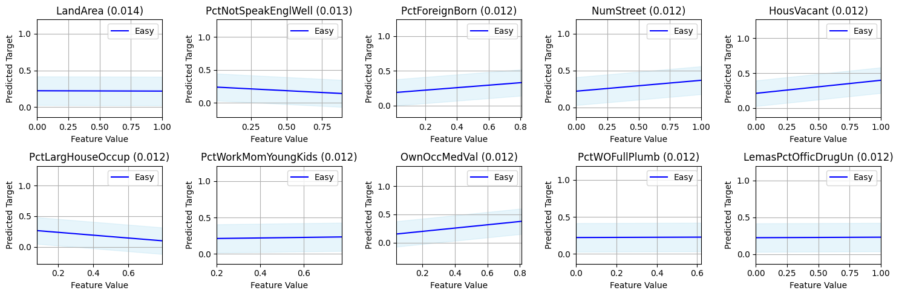
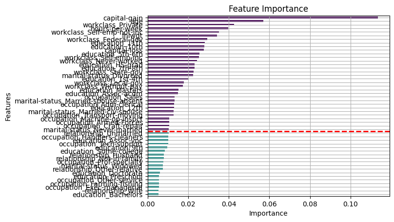
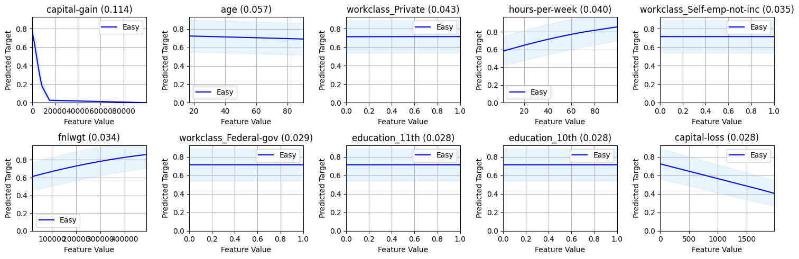
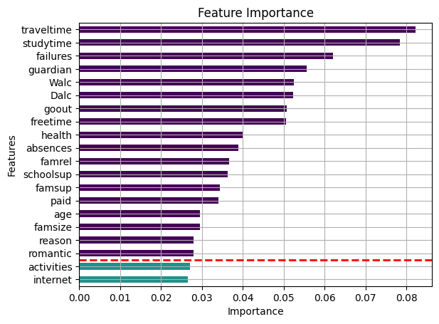
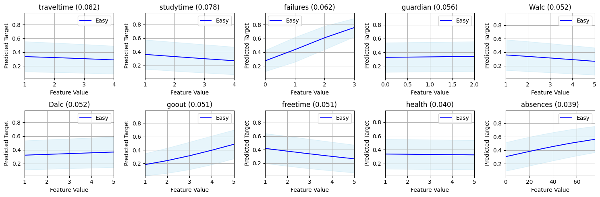

1. Regression#
1.1. Load Data and Train Model#
[3]:
from sklearn.linear_model import LinearRegression
from holistic.datasets import load_dataset
from sklearn.metrics import mean_squared_error
dataset = load_dataset('us_crime')
dataset = dataset.train_test_split(test_size=0.2, random_state=42)
train = dataset['train']
test = dataset['test']
model = LinearRegression()
model.fit(train['X'], train['y'])
mean_squared_error(test['y'], model.predict(test['X']))
[3]:
np.float64(0.01902558611293644)
Create a Custom Feature Importance Calculator#
[ ]:
from holistic.utils import RegressionProxy
from holistic.inspection import compute_partial_dependence, compute_lime_feature_importance
proxy = RegressionProxy(predict=model.predict)
# Compute Importances
local_importances = compute_lime_feature_importance(X=test['X'], y=test['y'], proxy=proxy, max_samples=200)
local_conditional_importances = local_importances.conditional()
importances = local_importances.to_global()
conditional_importances = local_conditional_importances.to_global()
ranked_importances = importances.top_alpha(0.8)
# Compute Partial Dependencies
partial_dependencies = compute_partial_dependence(test['X'], features=ranked_importances.feature_names, proxy=proxy)
y_pred = proxy.predict(test['X'])
[5]:
from holistic.explainability.metrics import regression_explainability_metrics
regression_explainability_metrics(importances, partial_dependencies, conditional_importances, test['X'], y_pred, local_importances)
[5]:
| value | reference | |
|---|---|---|
| metric | ||
| Alpha Importance Score | 0.762376 | 0.0 |
| XAI Ease Score | 1.000000 | 1.0 |
| Position Parity | 0.028967 | 1.0 |
| Rank Alignment | 0.658635 | 1.0 |
| Spread Ratio | 0.997286 | 0.0 |
| Spread Divergence | 0.068630 | 1.0 |
| Feature Stability | 0.902341 | 1.0 |
[6]:
from holistic.explainability.plots import plot_feature_importance
import matplotlib.pyplot as plt
fig,ax = plt.subplots(1,1, figsize=(5,15))
plot_feature_importance(importances, ax=ax, top_n=100)
[6]:
<Axes: title={'center': 'Feature Importance'}, xlabel='Importance', ylabel='Features'>

[7]:
from holistic.explainability.plots import plot_partial_dependence
plot_partial_dependence(partial_dependencies, ranked_importances, subplots=(2,5), figsize=(15,5))

3. Classification#
[8]:
from sklearn.linear_model import LogisticRegression
from holistic.datasets import load_dataset
from sklearn.metrics import accuracy_score
dataset = load_dataset('adult')
dataset = dataset.train_test_split(test_size=0.2, random_state=42)
train = dataset['train']
test = dataset['test'].sample(200) # For faster computation
model = LogisticRegression()
model.fit(train['X'], train['y'])
accuracy_score(test['y'], model.predict(test['X']))
[8]:
0.815
[9]:
from holistic.utils import BinaryClassificationProxy
from holistic.utils.feature_importances import compute_lime_feature_importance
from holistic.inspection import compute_partial_dependence
proxy = BinaryClassificationProxy(predict=model.predict, predict_proba=model.predict_proba, classes=model.classes_)
local_importances = compute_lime_feature_importance(X=test['X'], y=test['y'], proxy=proxy, max_samples=200)
local_conditional_importances = local_importances.conditional()
importances = local_importances.to_global()
conditional_importances = local_conditional_importances.to_global()
ranked_importances = importances.top_alpha(0.8)
partial_dependencies = compute_partial_dependence(test['X'], features=ranked_importances.feature_names, proxy=proxy)
y_pred = proxy.predict(test['X'])
[10]:
from holistic.explainability.metrics import classification_explainability_metrics
classification_explainability_metrics(importances, partial_dependencies, conditional_importances, test['X'], y_pred, local_importances)
[10]:
| value | reference | |
|---|---|---|
| metric | ||
| Alpha Importance Score | 0.329897 | 0.0 |
| XAI Ease Score | 1.000000 | 1.0 |
| Position Parity | 0.238573 | 1.0 |
| Rank Alignment | 0.524038 | 1.0 |
| Spread Ratio | 0.834619 | 0.0 |
| Spread Divergence | 0.517527 | 1.0 |
| Feature Stability | 0.938933 | 1.0 |
[11]:
from holistic.explainability.plots import plot_feature_importance
plot_feature_importance(importances, top_n=50)
[11]:
<Axes: title={'center': 'Feature Importance'}, xlabel='Importance', ylabel='Features'>

[12]:
from holistic.explainability.plots import plot_partial_dependence
class_index = 0 #1
plot_partial_dependence(partial_dependencies, ranked_importances, subplots=(2,5), figsize=(15,5), class_idx=class_index)

Multi Classification#
[13]:
from sklearn.linear_model import LogisticRegression
from holistic.datasets import load_dataset
from sklearn.metrics import accuracy_score
dataset = load_dataset(dataset_name="student_multiclass")
dataset = dataset.train_test_split(test_size=0.2, random_state=42)
train = dataset['train']
test = dataset['test']
model = LogisticRegression()
model.fit(train['X'], train['y'])
accuracy_score(test['y'], model.predict(test['X']))
[13]:
0.5063291139240507
[14]:
from holistic.utils import MultiClassificationProxy
from holistic.utils.feature_importances import compute_lime_feature_importance
from holistic.inspection import compute_partial_dependence
proxy = MultiClassificationProxy(predict=model.predict, predict_proba=model.predict_proba, classes=model.classes_)
local_importances = compute_lime_feature_importance(X=train['X'], y=train['y'], proxy=proxy, max_samples=200)
local_conditional_importances = local_importances.conditional()
importances = local_importances.to_global()
conditional_importances = local_conditional_importances.to_global()
ranked_importances = importances.top_alpha(0.8)
partial_dependencies = compute_partial_dependence(train['X'], features=ranked_importances.feature_names, proxy=proxy)
[15]:
from holistic.explainability.metrics import multiclass_explainability_metrics
multiclass_explainability_metrics(importances, partial_dependencies, conditional_importances, test['X'], y_pred, local_importances)
[15]:
| value | reference | |
|---|---|---|
| metric | ||
| Alpha Importance Score | 0.692308 | 0.0 |
| XAI Ease Score | 0.972222 | 1.0 |
| Position Parity | 0.549743 | 1.0 |
| Rank Alignment | 0.736383 | 1.0 |
| Spread Ratio | 0.971276 | 0.0 |
| Spread Divergence | 0.182589 | 1.0 |
| Feature Stability | 0.897895 | 1.0 |
[16]:
from holistic.explainability.plots import plot_feature_importance
plot_feature_importance(importances)
[16]:
<Axes: title={'center': 'Feature Importance'}, xlabel='Importance', ylabel='Features'>

[17]:
from holistic.explainability.plots import plot_partial_dependence
class_index = 0 #1
plot_partial_dependence(partial_dependencies, ranked_importances, subplots=(2,5), figsize=(15,5), class_idx=class_index)
